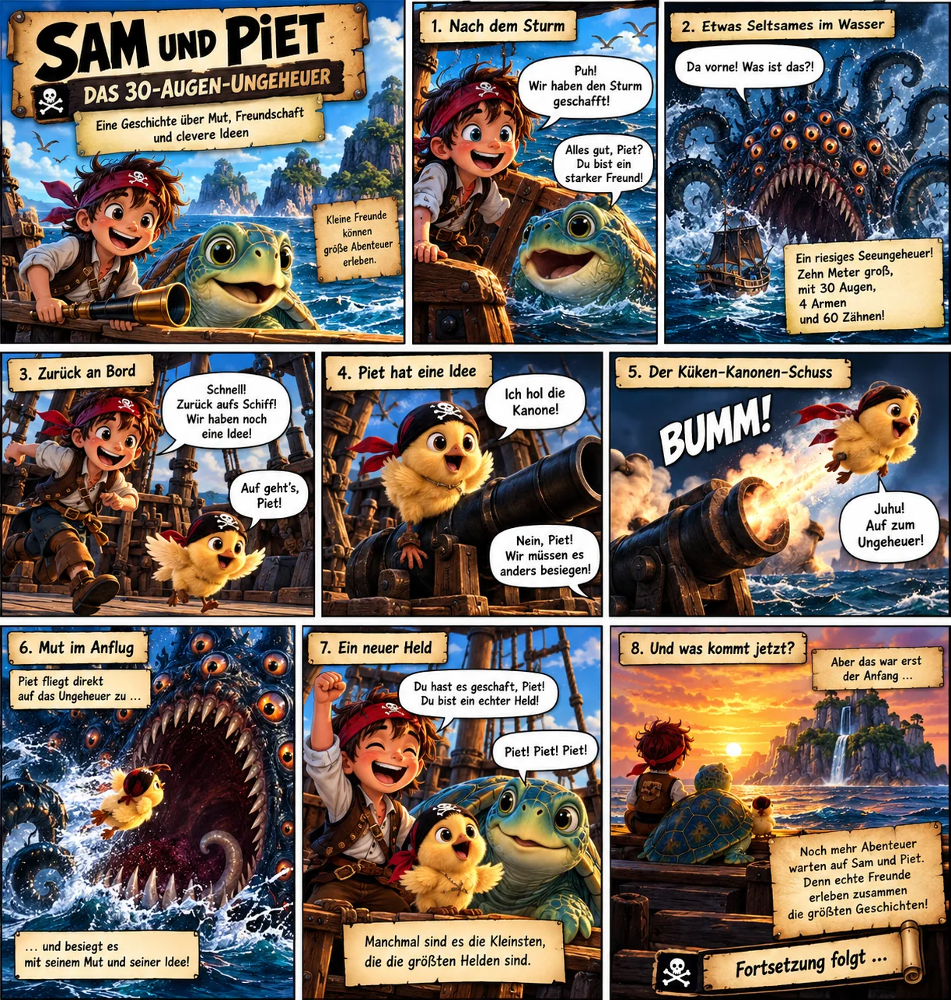
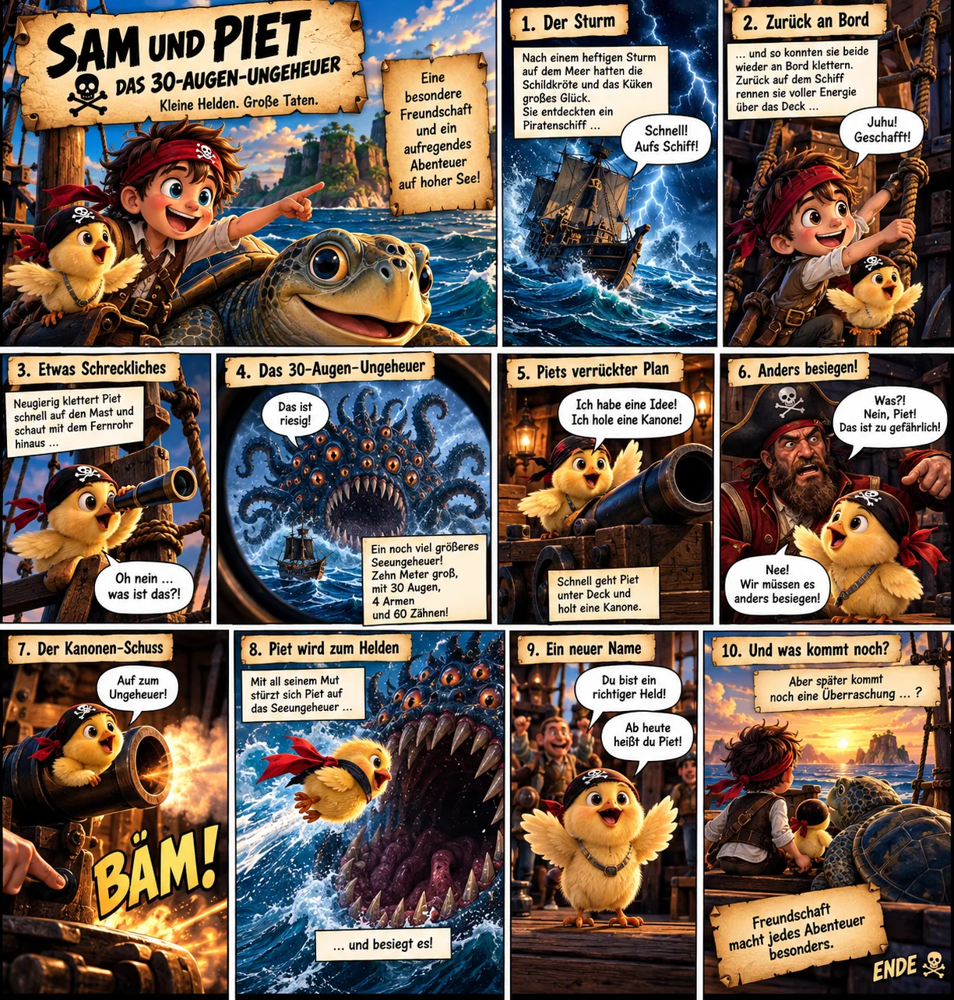
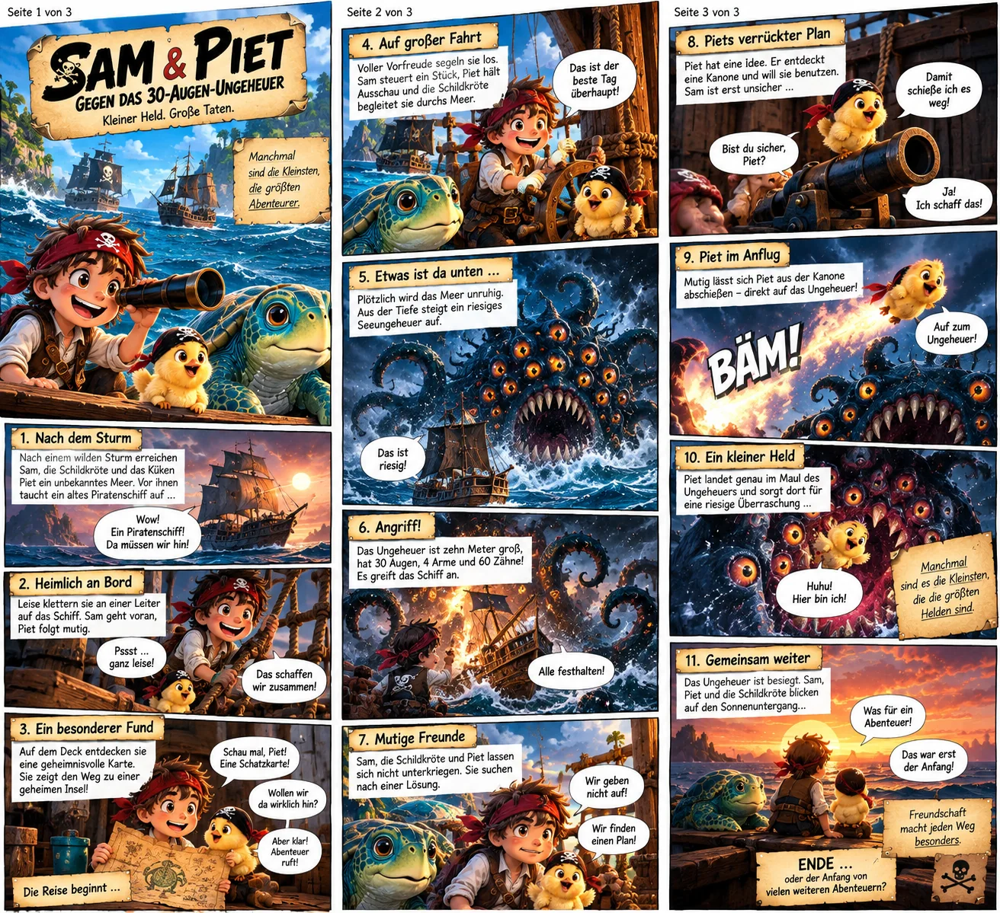
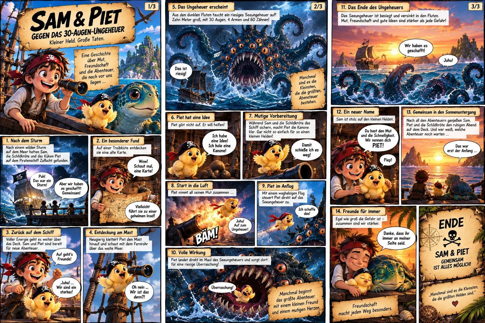

Sams frühe Comic-Entwürfe
Sam und Piet auf hoher See
Piraten, ein Küken und ein Ungeheuer mit dreißig Augen. Vier frühe Bildfassungen zeigen, wie sich die Idee auf dem Papier veränderte.
Die Zeichnungen und Sprechblasen sind im deutschen Original zu sehen. Tippe auf eine Seite, um das Bild in voller Größe zu öffnen.



